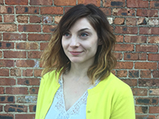

About Me

Lucy believes in the power of design as a conduit for communicating the complex ideas that drive us. Originally from New Jersey, she now lives and works in Dallas, TX. Lucy received a Master of Arts in Art History from Southern Methodist University in 2016. She earned her Bachelor of Arts in Sociology from the University of Pennsylvania in 2011.